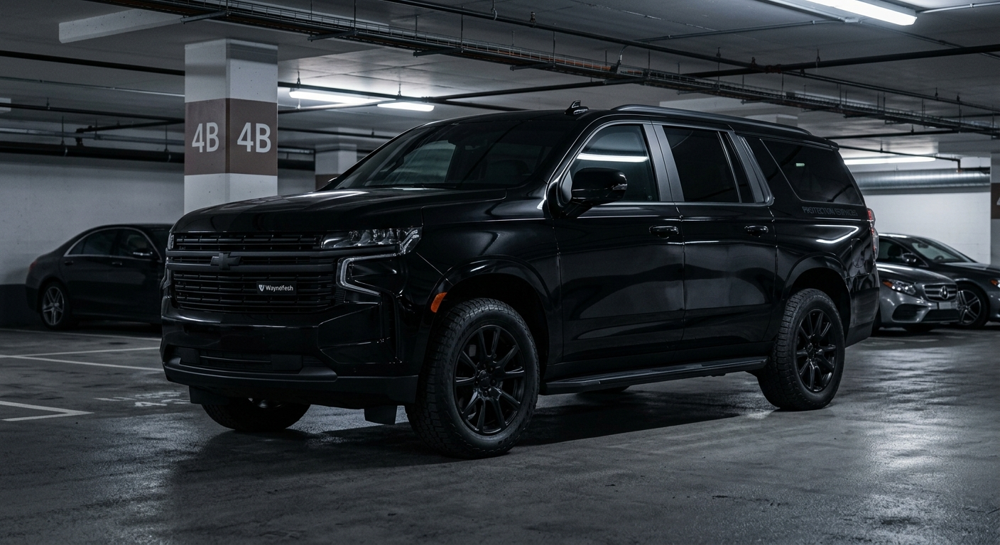
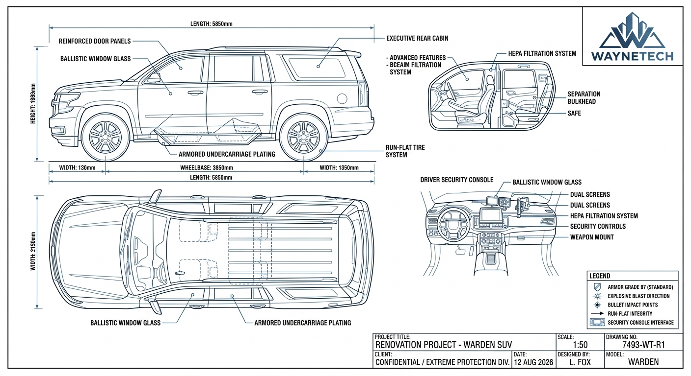

WAYNETECH // DIVISION R&D : VÉHICULES AVANCÉS & MOBILITÉ
Unité tactique Bêta-01 // Véhicule d'intervention
Fiche Projet : Warden (SUV Tactique Bêta-01)
- Classification :
- Document interne sécurisé
- Accès Restreint (Niveau 4)
- Nom de code officiel (B2B) :
- Véhicule d'intervention rapide pour les équipes d'urgence et de sécurisation de sites industriels sensibles.
- Usage réel sur le terrain :
- SUV blindé d'intervention lourdement modifiée, blindée, ultra-rapide et entièrement connectée pour les opérations nocturnes et l'infiltration urbaine.


Caractéristiques Générales
- Configuration
- SUV blindé d'escorte VIP, cabine exécutive
- Longueur
- 5.85 m
- Largeur
- 2.15 m
- Hauteur
- 1.98 m
- Empattement
- 3.85 m
- Masse à vide (blindé)
- ~4100 kg
- Charge utile de référence
- ~600 kg
- Places
- 2 + 5 (dont cabine arrière exécutive séparée)
- Masse opérationnelle lourde
- ~4700 kg
Motorisation
- Moteur
- 1 × WayneTech V8 turbo essence, renforcé pour surcharge blindage
- Puissance visée
- ~450 ch
- Couple maximal
- ~700 Nm
- Transmission
- Intégrale permanente, boîte automatique 10 rapports
- Suspension
- Pneumatique adaptative, compensation de charge
Performances
- Vitesse maximale visée
- 190 km/h
- 0 à 100 km/h
- ~6,5 s
- Distance de freinage d'urgence
- Optimisée malgré la surcharge blindée
- Comportement post-impact
- Roulage maintenu sur pneus run-flat
Autonomie & Emploi
- Autonomie routière
- ~700 km
- Réserve carburant
- 20 %
- Emploi
- Transport et protection rapprochée de personnalités
- Usage prévu
- Urbain, périurbain, convois officiels
Déploiement
- Convois de protection rapprochée
- Usage urbain et périurbain principalement
- Compatible avec dispositifs d'escorte multi-véhicules
- Non conçu pour un usage tout-terrain intensif
Signature / Discrétion
- Silhouette proche d'un SUV grand public haut de gamme
- Blindage intégré sans surépaisseur visible
- Vitres teintées classifiées non distinguables au premier regard
- Objectif : passer inaperçu dans un environnement urbain standard
Electronique Embarquée
- Console de sécurité conducteur dédiée
- Écrans doubles (navigation / diagnostic sécurité)
- Système de filtration HEPA cabine (protection NRBC légère)
- Cloison de séparation blindée (SAFE) entre habitacle avant/arrière
- Caméras périphériques et détection de menace à distance
Cabine Exécutive
- Sièges arrière indépendants, configuration bureau mobile
- Isolation phonique renforcée
- Cloison de séparation escamotable
- Éclairage d'ambiance et prises d'alimentation intégrées
- Accès sécurisé aux communications depuis la cabine arrière
Commandes
- Direction assistée calibrée pour surcharge blindée
- Freinage renforcé adapté à la masse du véhicule
- Mode conduite d'urgence (dégagement rapide)
- Contrôles de sécurité dédiés au poste de conduite
Systèmes
- Architecture électrique double redondance
- Bascule automatique en cas de défaillance d'un circuit
- Diagnostic prédictif de l'ensemble blindage/mécanique
- Modules de sécurité remplaçables en atelier spécialisé
Protection
- Blindage grade B7 (standard) sur l'ensemble de la cellule
- Vitrage balistique multicouche
- Plancher blindé anti-mine/anti-souffle
- Pneus run-flat à intégrité prolongée
- Réservoir de carburant blindé et autoscellant
Armement
- Configuration standard
- Non armé
- Point d'ancrage disponible
- Support d'arme dédié au poste de conduite (option, usage habilité)
- Armement WayneTech
- Spécialisé, quantité limitée, selon contrat
- Autorisation d'emploi
- Conducteur/agent de sécurité habilité
Technologies WayneTech
- Fusion — Détection de menace et fusion des caméras périphériques
- Vector — Gestion adaptative de la suspension et de la stabilité en charge
- Gestion thermique WayneTech pour composants blindage/électronique
- Wayne Emergency Mode — Protocole de dégagement d'urgence temporaire
Communications
- Communications sécurisées chiffrées
- Liaison directe avec le dispositif de protection rapprochée
- Fonctionnement essentiel sans connexion WayneTech
Ecosystème WayneTech : Warden Assistance™
- Diagnostic à distance
- Pièces détachées et blindage certifié
- Maintenance spécialisée en atelier habilité
- Formation à la conduite d'urgence et d'escorte
- Support logistique pour dispositifs de protection
Contrôle Des Technologies Sensibles
- Utilisation des fonctions normales par le propriétaire
- Options de sécurité avancées soumises à autorisation
- Capacités sensibles verrouillables selon contrat ou statut du client
- Contrôle des technologies propriétaires conservé par WayneTech